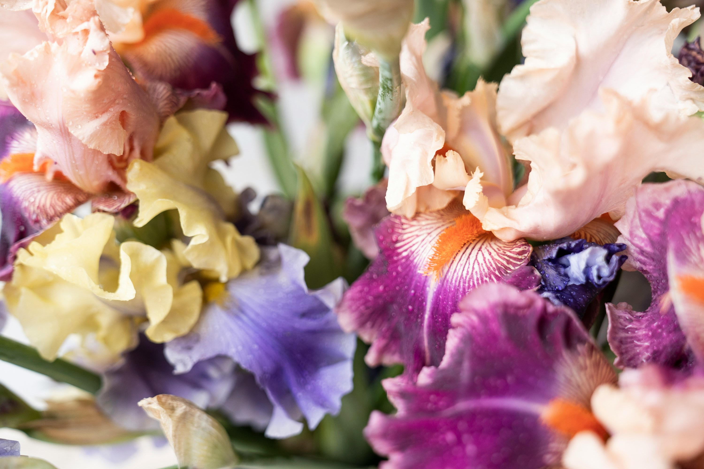
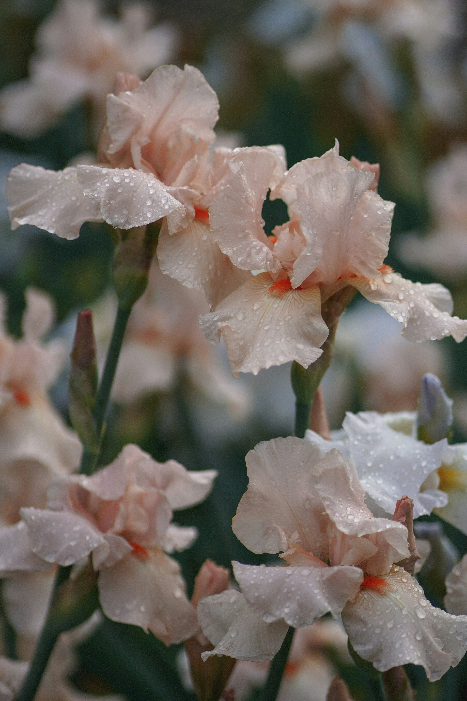
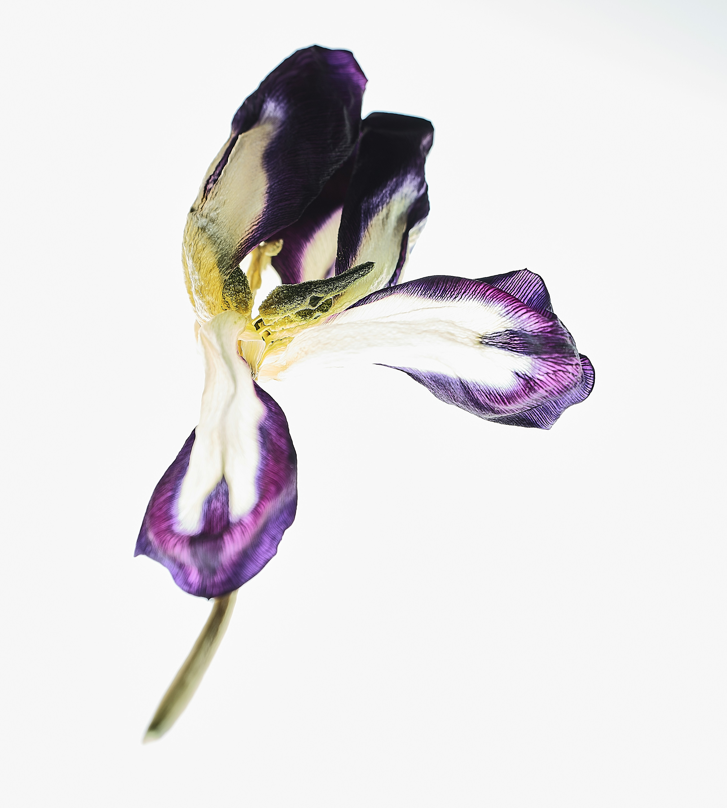

Represents faith, wisdom and positive change.
Named after the goddess Iris of communication and the divine.
Associated with elegance as well as royalty due to its appearance.
Irises are no different when it comes to representing symbolism based on their colors. For example, white represents purity, innocent and sympathy.

Irises are used in perfumes and lotions by using, rizhomes in order to make orris butter.

They attract beneficial pollinators, such as bees and butterflies and are great to use in flower arranging.
